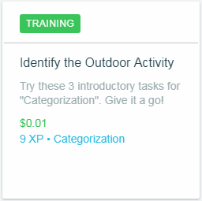

Tareas remuneradas

Haz click en las imagenes para mayor información.
Con el fin de evitarte problemas por desconocimiento de las normas de Spare5, te queremos explicar qué es, en nuestra opinión, lo más importante que se menciona en los términos y condiciones de ésta plataforma; si deseas conocer más a profundidad acerca de las condiciones del servicio de Spare5, puedes acceder a ellas mediante el siguiente enlace: Términos y Condiciones.

De los temas más importantes que toca los términos y condiciones de Spare5, es la restricción de que sólo puedes crear una única cuenta, también menciona que no puedes trabajar utilizando más de una cuenta y que ninguna persona que no seas tú puede realizar tareas que se te hayan asignado.

Otro aspecto que trata las condiciones del servicio de Spare5 es acerca de los pagos respecto al desempeño en las tareas, en donde menciona que si tu desempeño en una tarea es muy bajo, si dejas incompleta alguna tarea, si las realizas con calidad insuficiente, o si de algún otro modo violas las pautas de la comunidad, no te será pagada esa tarea y lo que hayas hecho en dicha tarea, no te será recompensado con el respectivo pago. También se menciona que Spare5 no corre con los gastos de transacción por PayPal, aunque en este caso este tema no toma mayor importancia ya que, por éstas transacciones, PayPal no cobra ninguna comisión.

También menciona que, de presentarse cualquier acción legal en contra de Spare5 que tú instaures, deberás correr con todos los gastos de abogados, representantes, pérdidas, daños, juicios y demás procesos que se hagan necesarios en dicha situación, siempre y cuando la reclamación se base en alguno de los siguientes puntos:

Spare5 puede advertirte, suspender temporalmente o definitivamente tu cuenta o una tarea si haces alguna de las siguientes:

Las que acabas de observar suelen ser las tareas que te dan cuando apenas estas empezando, te explican cómo realizar algunas tareas con tutoriales, pero no te preocupes por las que no tiene un tutorial, al iniciar cada tarea, te dan instrucciones para realizarla, así tendrás mejor desempeño en todas tus tareas y podrás conseguir mejores pagos a medida que vayas ganando experiencia, aclarándote que un considerable porcentaje de tareas se encuentran traducidas en el idioma de tu país.
Existen 4 tipos de tareas en Spare5, a continuación, te explicamos detalladamente cada uno de ellos:
Tutoriales: Estas tareas no son remuneradas, las puedes hacer cuantas veces desees si quieres aprender para futuras tareas o por si olvidaste cómo realizar alguna, aunque no son pagas, te recomendamos hacerlas al principio, cuando no tienes tantas tareas por hacer, ya que este tipo de tareas te enseñan cómo hacer las tareas que, basándonos en nuestra experiencia, aparecen con más frecuencia, además de darte puntos de experiencia, es decir, te ayudan a aumentar tus opciones de recibir una tarea paga. |
 |
|  | Entrenamiento: Estas tareas son muy similares a los tutoriales, muchas de ellas son pagas únicamente la primera vez que las haces y algunas no son pagas nunca, pero puedes hacerlas cuantas veces quieras para mejorar tus habilidades. |
Clasificación: Estas tareas son necesarias para desbloquear tareas pagas, necesitas realizarlas con un 100% de acierto para que te la califiquen como aprobada, si no la apruebas al primer intento, no te preocupes, podrás volver a realizarla 48 horas después, cuando la apruebes, se te desbloqueará una tarea con pago además de darte experiencia también. |
  |
 |
Tareas con pago: Estas son las que nos interesan a todos, ¿verdad?, estas tareas aportan experiencia, pero lo más importante, aumentan tus ganancias en Spare5 entre 1 y 5 centavos de dólar, en la mayoría de los casos, son muy simples y no te tomarán más de 30 segundos, suelen estar por un tiempo y desaparecer, así que está atento. Cuando entras a realizar la tarea por primera vez, te dan instrucciones y te mencionan qué debes hacer y cómo hacerlo, presta atención a las instrucciones para que tengas alto porcentaje de acierto y un mejor pago, además de que, si lo haces bien, muy probablemente te vuelva a llegar ese tipo de tarea. |
Por nuestra experiencia podemos decirte que entre mejor completes las tareas, más te llegarán, ya que tu desempeño en estas tareas será revisado por quienes las plantean.


Spare5 también cuenta con un sistema de referidos, el cual se te activa en el momento en el que has conseguido 10 USD en total, contando todas las semanas que hayas trabajado, podrás encontrar tu enlace de referidos haciendo click en la parte superior como indica la imagen.


Como observas, se te abrirá una pequeña ventana en la cual aparece tu enlace de referidos, que podrás enviarlo a tus amigos y, si uno de ellos se registra y empieza a ganar dinero en Spare5, podrás recibir 2 UDS por cada 10 de tu amigo y él recibirá 1 USD; esto es válido hasta que ocurra una de estas dos situaciones: pasan 180 días desde que tu amigo se registró ó tu amigo ha conseguido 100 USD en total, como se explica en la captura.
Tienes varias formas para hacerlo, con redes sociales como Facebook, Google+ o LinkedIn, aunque también te puedes registrar creando una cuenta, si escoges esta opción, te llevará a un formulario en que tendrás que indicar tu e-mail, tu primer nombre, tu apellido y crear tu contraseña.
 |
 |
Así que, si quieres ganar dinero de una manera rápida, segura y entretenida, Spare5 es una gran opción. Te dejamos el siguiente botón para que, si así lo deseas, te registres y empieces a ganar dinero.
¿Debo saber inglés para hacer las tareas?
No, no es necesario saber inglés, en muchas de las tareas las instrucciónes también están en el idioma de preferencia, y en las que no, puedes utilizar algún traductor online, Spare5 no te sancionará si lo haces.
¿Cuánto tiempo puedo estar sin hacer tareas?
Todo el tiempo que desees, Spare5 no sanciona por inactividad en tu cuenta, evidentemente, no te llegará el pago si pasas toda la semana sin hacer tareas, pero no serás penalizado por ello.
¿Hay límite de tiempo para terminar una tarea?
No, en Spare5 puedes tardarte todo lo que necesites, aunque si tardas mucho tiempo, aparecerá el siguiente mensaje:

Como ves, el mensaje nos indica que la sesión expirará en 60 segundos, es decir, que en un minuto, nos redigirá a elegir una nueva tarea y no podremos continuar con la que estamos haciedo pero al dar click en
¿La única forma de recibir el pago es por PayPal?
Sí, Spare5 sólo envía el pago por medio de PayPal y debes vincular tu cuenta para poder recibir los pagos, de lo contrario, no recibirás ningún pago, no perderás lo que hayas ganado, pero hasta que no vincules tu cuenta de PayPal no podrás recibir lo que hayas conseguido, también vale la pena mencionar que no es necesario tener cuenta verificada en PayPal.
¿Cuántas tareas puedo hacer por día?
Todas las que desees, en Spare5 no hay límite de tareas que puedes completar, así como no sucede nada si no haces ninguna tarea, tampoco ocurre nada si haces pocas o muchas, todo depende de qué tanto te guste lo que estés haciendo, y si no has terminado la tarea que estés haciendo, puedes salir sin ningún problema, tampoco serás penalizado por hacerlo, eso sí, cuando vuelvas a ingresar a hacer la tarea, tendrás que comenzar de nuevo, el progreso no se guarda.
No tengo cuenta en PayPal
No hay problema, lo primero que tienes que hacer es ir a la página de PayPal, no te facilitamos el link por tu propia seguridad, una vez ahí, en la parte superior te encontrarás con las siguientes opciones:

Aquí, tras dar click en

Posteriormete te preguntarán tu género y gustos y luego tus datos personales:


Finalmente te preguntarán si quieres asociar tu tarjeta bancaria, pudiendo posponerno si así quieres al hacer click en